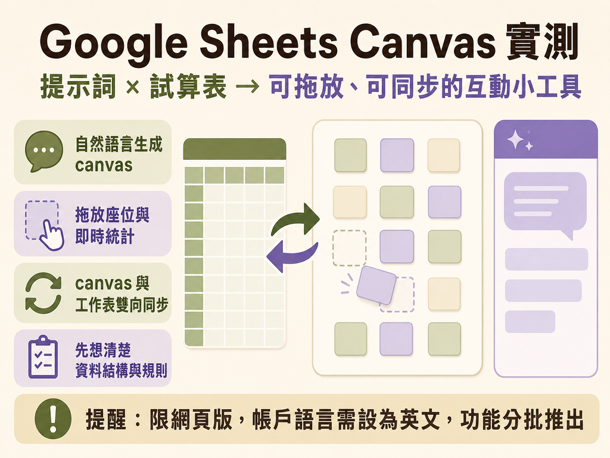
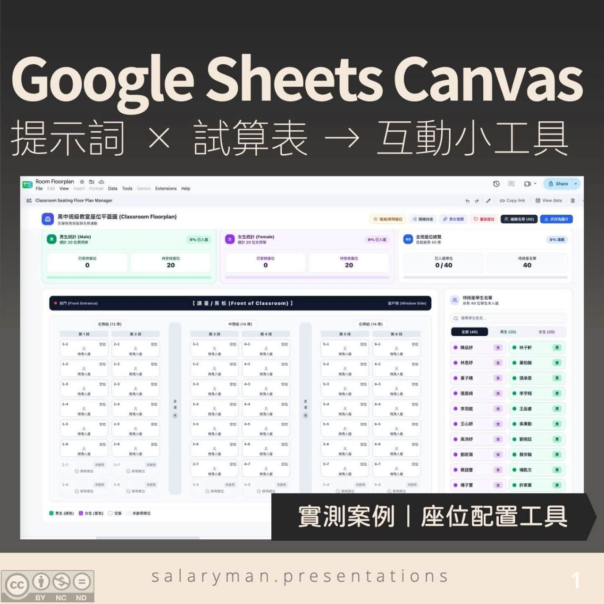
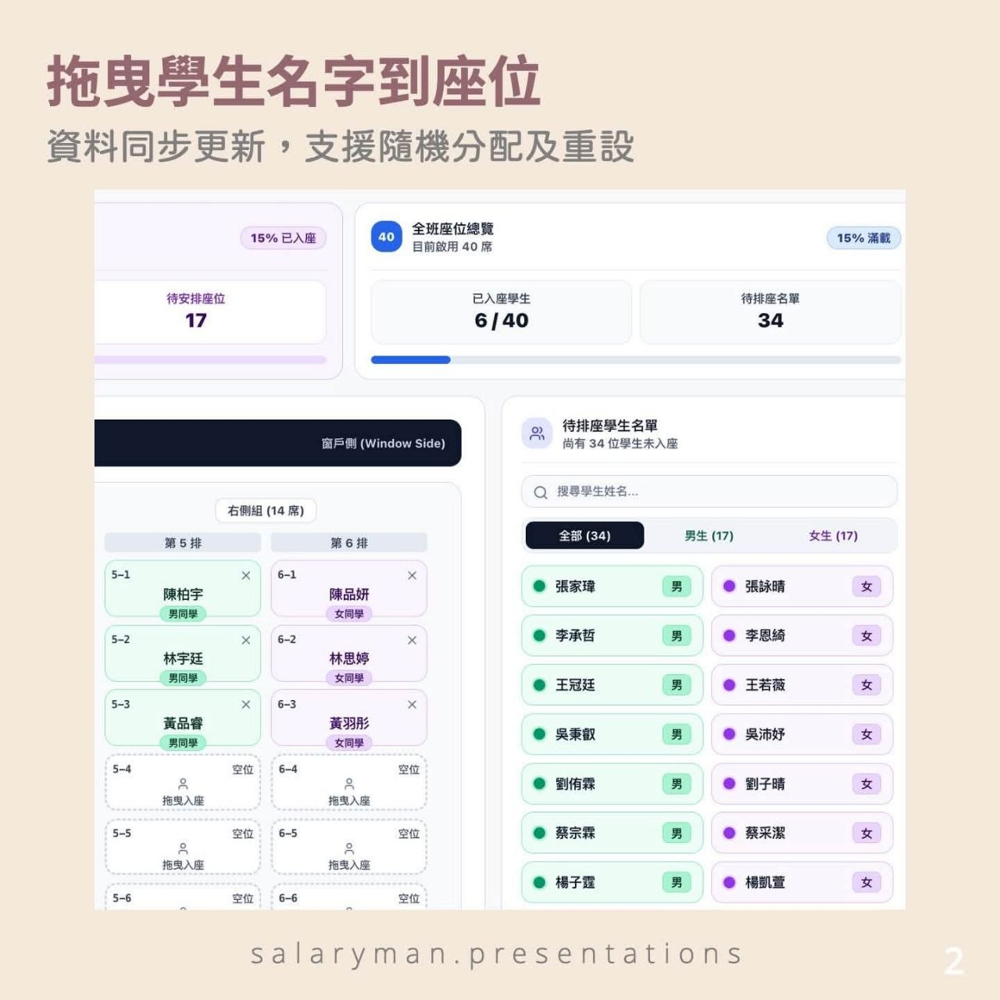
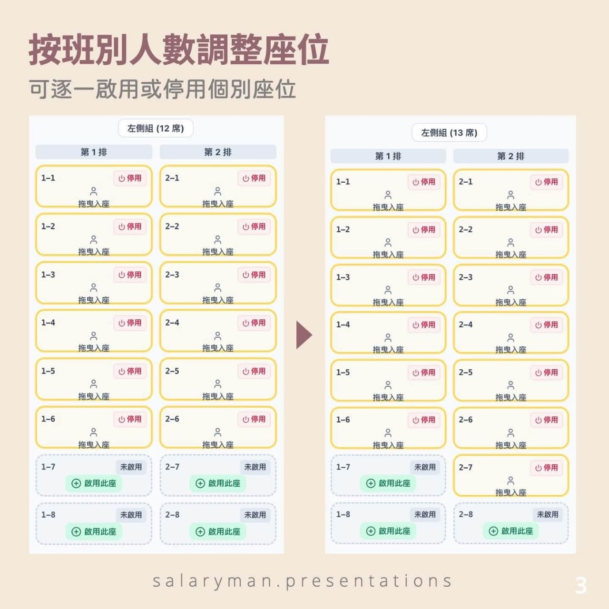
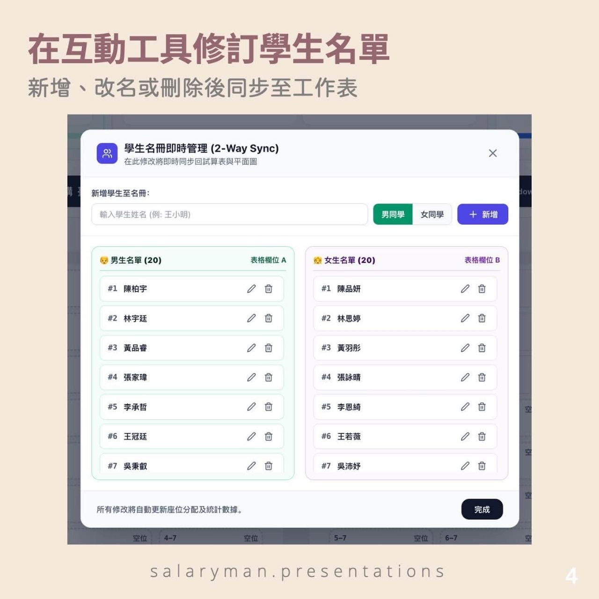
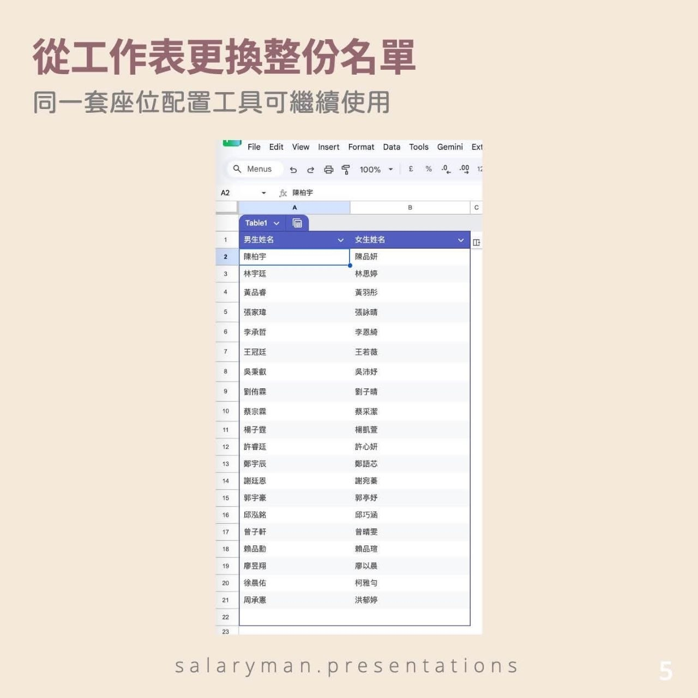
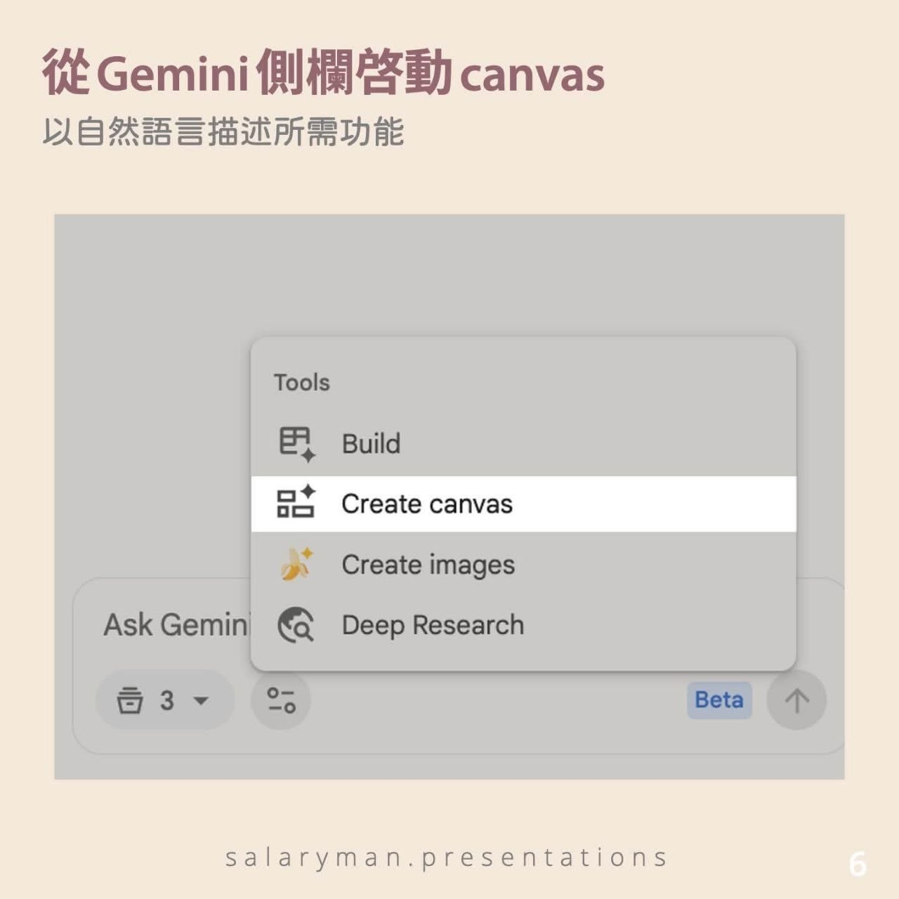

Google Sheets CanvasGemini互動小工具
Google Sheets Canvas｜提示詞 × 試算表 → 互動小工具
這則實測指出：Sheets canvas 可以把試算表資料透過 Gemini 側欄生成可視、可拖放、可同步的互動介面。案例用課室座位表展示資料同步、座位啟停、名單維護、隨機編排與另存圖片等能力。
來源：Facebook 原貼文
重點摘要

核心轉變
用提示詞把試算表資料變成可拖放、可操作、可同步的 canvas 介面。
實測案例
課室座位表：拖曳學生到座位、查看剩餘名單與座位、重設、隨機編排、另存圖片。
雙向同步
在 canvas 修改或在原始工作表更新名單，兩邊都能同步反映。
可重用邏輯
換一班學生名單即可延用同一套座位配置，也可延伸到辦公室、會議、活動座位與培訓分組。
落地提醒
不寫程式不代表不用設計；仍要先想清楚資料結構、操作規則與例外情況，並逐項測試。
原文圖卡／實測截圖
原圖依熊熊提供內容完整保留；原貼文標示 CC BY-NC-ND 4.0，請尊重原創者「商業簡報實戰懶人包 Business Presentations: lessons from the front line」的整理與思考。






操作流程
- 將 Google 帳戶語言設定為英文。
- 在 Gemini 側欄選擇 Create canvas，或從功能表選擇 Insert > Create a canvas。
- 用提示詞描述資料、操作與版面要求。
- 逐項測試拖放、同步、增刪、停用、匯出等功能，再用提示詞修正。
實測提示詞
Context:
my classroom has the floor plan of (from left to right)
- 6 seats
- 6 seats
corridor
- 7 seats
- 7 seats
corridor
- 7 seats
- 7 seats
the 6 seat columns are front-aligned.
Task:
generate an interactive, editable (via drag and drop) floor plan for my classroom based on the student list.
Functions:
the floor plan would need a staging area for the names.
use light green (male) and light purple (female) for the student gender.
counter on top to show number of students assigned and number of students not yet assigned.
if i add names to the table the floor plan should be refreshed accordingly.
include a reset button and save as image button - pop-up a hi-res picture of the plan.
add a enable/ disable function to the desks in case we need to add more students or some students are not required.
Design:
modern clean layout, high school theme, light background.小河觀察
這個功能的重點不是「自動產生漂亮畫面」，而是把試算表變成一個可操作的資料介面。真正能否落地，取決於一開始有沒有把資料欄位、同步規則、例外狀況與測試項目想清楚。
原文整理
【 Google Sheets canvas｜提示詞 × 試算表 → 互動小工具（實測＋附提示詞）】 要把試算表資料變成可視、可操作，並能與原始資料雙向更新的介面，過去通常要人手設計工作表、加入公式或程式，或借助其他 no-code 工具製作。
Google Sheets 剛推出 Sheets canvas。在 Gemini 側欄輸入提示詞，即可生成互動式小工具；無論在 canvas 還是原始試算表修改資料，兩邊都可以即時同步更新。
除了資料儀表板、Kanban board 等首先想到的應用，Google 官方也示範了透過拖曳分配賓客到婚禮餐桌的應用。
趁著新學年即將開始，我選了大家容易理解的課室座位表作為測試場景。相同的配置邏輯，也可以延伸至辦公室座位、會議及活動座位安排、培訓活動分組等用途。
操作方法：
① 將 Google 帳戶語言設定為英文 ② 在 Gemini 側欄選擇「Create canvas」，或從功能表選擇 Insert > Create a canvas ③ 以提示詞描述工具的資料、操作及版面要求（例子可見留言） ④ 逐項測試功能，再以提示詞修正
圖中學生姓名均由 AI 隨機生成，並非真實學生資料。
在這個課室座位表內，可以把學生名字拖曳至座位、查看剩餘學生與座位、增加或停用座位、修改學生名單、隨機編排，以及把座位表另存為圖片。只要換上另一班的學生名單，同一套配置邏輯便可重用，不需要由零開始製作另一張座位表。
想起我讀書時，老師會買一大片薄磁鐵，貼上學生名字後逐一剪開，方便反覆調動座位。現在，同一種配置邏輯可以直接做成可拖放、會同步更新的介面。
這次測試讓我想測試，在畫面生成以外，canvas 能否把拖放、增刪和資料同步等操作真正串連起來。它毋須編寫程式，但仍需要先想清楚資料結構、操作規則和例外情況，再逐項測試生成結果。
Sheets canvas 目前只限網頁版使用，帳戶語言需設定為英文。個人用戶適用於 Google AI Pro 及 Ultra；Google Workspace 則正向 Business Standard／Plus、Enterprise Standard／Plus以及指定教育方案分批推出；合資格帳戶如尚未看到，可能仍在功能推出期間。
(CC BY-NC-ND 4.0 with 商業簡報實戰懶人包 Business Presentations: lessons from the front line 原創內容發布；請尊重原創者的整理與思考。）